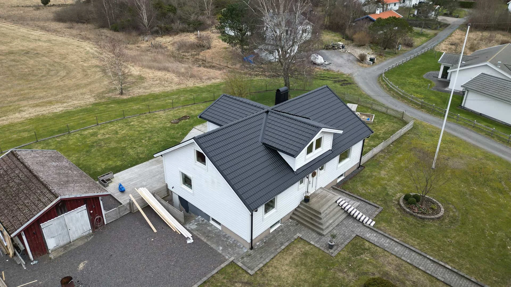
Västra Bygg & FastigheterDitt hem.
Med hemkänsla i varje detaljFrån husets utsida till rummet du lever i. ↗Ditt hem.
Vårt hantverk.
Renovering, nybyggnation och omsorg om detaljerna. Från första idé till sista skruv, längs hela västkusten.
10 årGaranti på utfört arbeteTrygghet även efter överlämning
2018Starten på vår resaEtt lokalt byggföretag
✓Försäkrade i Trygg-HansaFör ett tryggt samarbete
✓KollektivavtalGoda villkor för vårt team
Ett byggföretag. Många möjligheter.
Det ska kännas bra att bygga om. Vi är ett personligt team av snickare som hjälper privatpersoner, företag och bostadsrättsföreningar att ta nästa steg med sin fastighet.
Lär känna Västra ByggHantverket i verklighetenOlika projekt.
Olika projekt.
Samma omsorg.


Se alla 15 projektHem, fastigheter och miljöer längs västkusten.
Vad vill du
göra med ditt hem?
Från det lilla snickeriet till den stora förändringen. Utforska våra tjänster och hitta rätt start för ditt projekt.
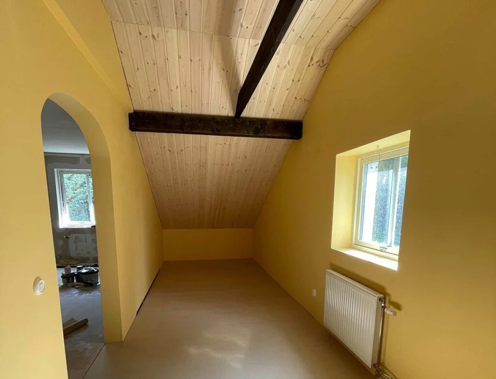
Ombyggnation & renovering
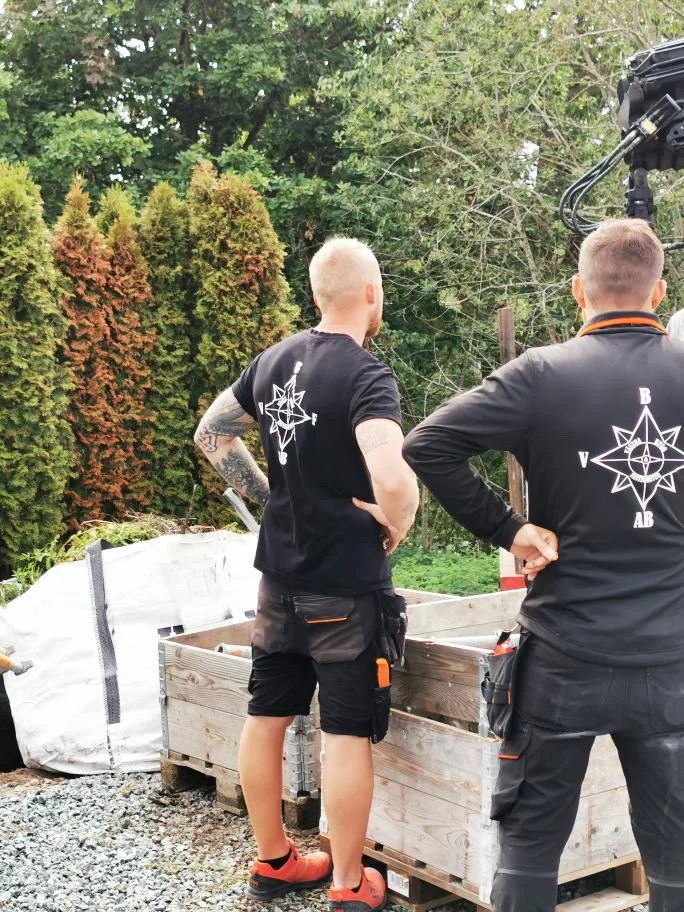
Människorna bakom jobbetVi bygger hus.
Träffa hela teamet
Vi bygger hus.
Och förtroende.
Sedan 2018 har vi hjälpt kunder längs västkusten med bygg- och renoveringsprojekt. Hos oss möter du ett team som bryr sig om både hantverket och samarbetet.
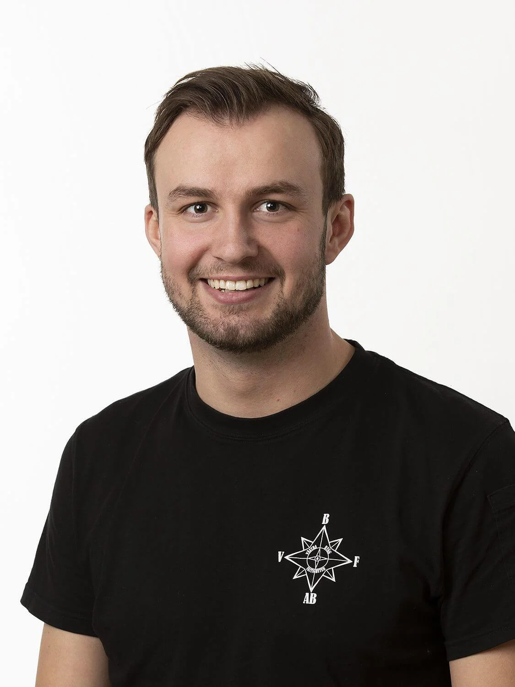
Henric AhlströmDelägare / Projektledare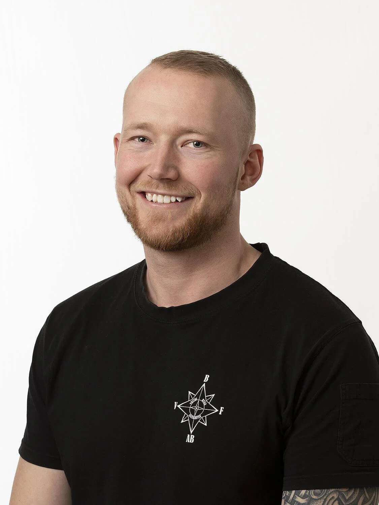
Anton OlofssonDelägare / ProjektledareOrd från våra kunderDet bästa kvittot
Det bästa kvittot
är ett gott förtroende.
De höll sig inom tidsramen och budgeten
Jättebra från start till slut!
Snabba svarstider, Punktlighet, Kvalitet, Professionalism.
Korta utdrag ur kundomdömen publicerade på företagets ursprungliga webbplats ↗.
En tydlig väg
från tanke till klart.
- 01
Vi lyssnar
Berätta om din idé och vad du vill få ut av projektet. Vi går igenom förutsättningarna tillsammans.
- 02
Vi planerar
Omfattning, material och tidplan blir grunden för en tydlig offert och ett skriftligt avtal.
- 03
Vi bygger
Våra snickare och samarbetspartner tar hand om genomförandet, med dialog längs vägen.
- 04
Vi går igenom
Vi avslutar med en gemensam genomgång. Du får ett utfört arbete att leva med och använda.
Bra hantverk bygger
på bra samarbeten.
Våra samarbetspartner inom bygg, installation och material.
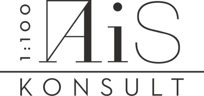
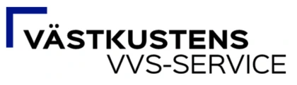
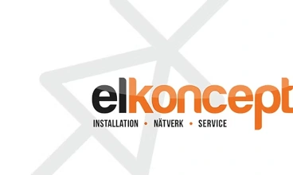
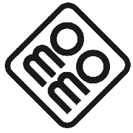
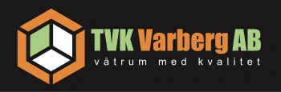
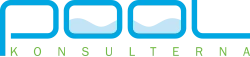
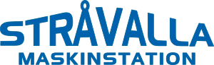
Innan första
hammarslaget.
Svar på några vanliga frågor inför ett byggprojekt.
Var arbetar ni?
Vi arbetar i Göteborg, Kungsbacka och Varberg med omnejd, bland annat Kullavik, Särö, Onsala, Åsa och Frillesås.
Kostar det något att få en offert?
Nej, vi erbjuder kostnadsfria offerter. Beskriv ditt projekt och ange var arbetet ska utföras så kan vi ta nästa steg.
Vad innebär er garanti?
Vi lämnar 10 års garanti på utfört arbete. Gå igenom vad som ingår och de fullständiga villkoren med oss i samband med offert och avtal.
Arbetar ni med företag och BRF:er?
Ja. Bland våra projekt finns lokalanpassningar, uppdrag för Bilia Sisjön och en anpassad utemiljö för en bostadsrättsförening i Varberg.
Vad behöver jag förbereda inför kontakt?
En kort beskrivning, ort och ungefärlig önskad tidpunkt räcker för ett första samtal. Bilder, skisser och ritningar är bra om du har dem.
Vad vill du
bygga vidare på?
En tydlig idé eller bara en tanke.
Berätta så tar vi det därifrån.